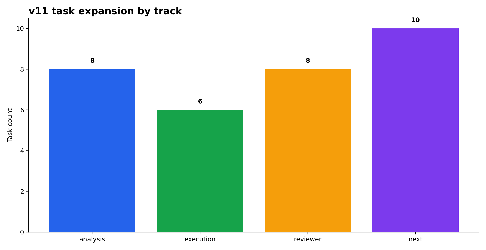
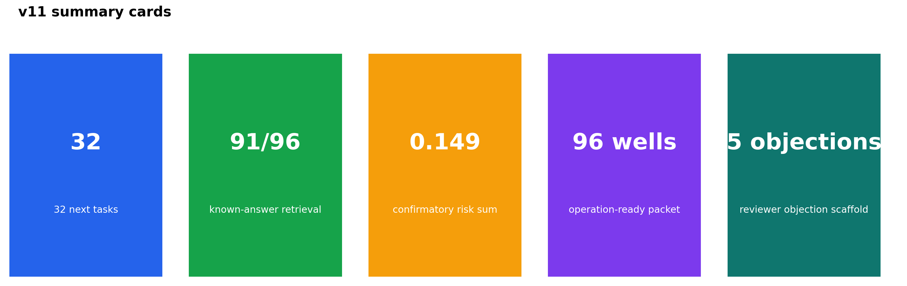
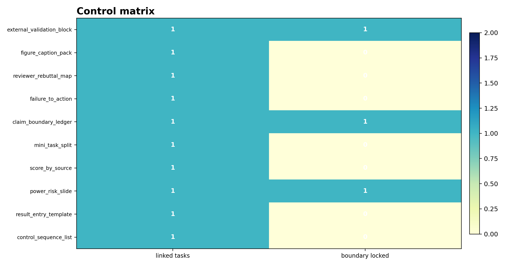
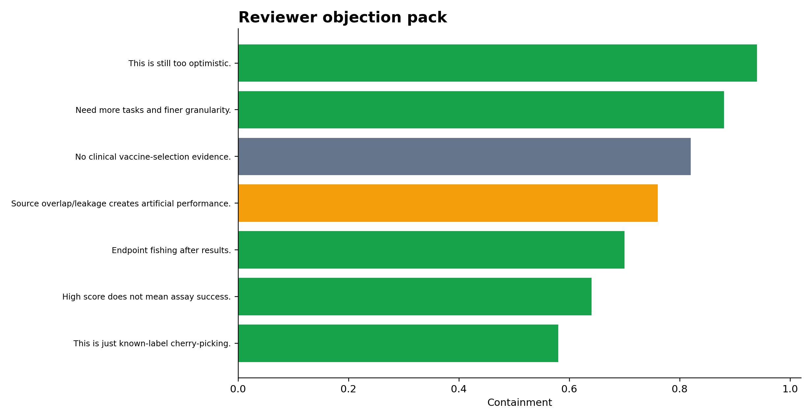
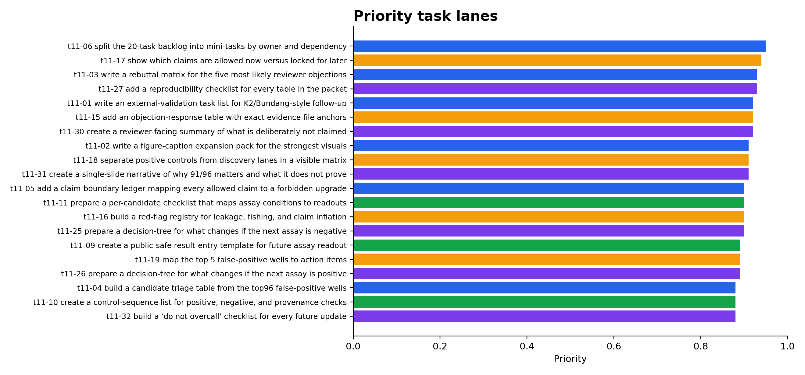
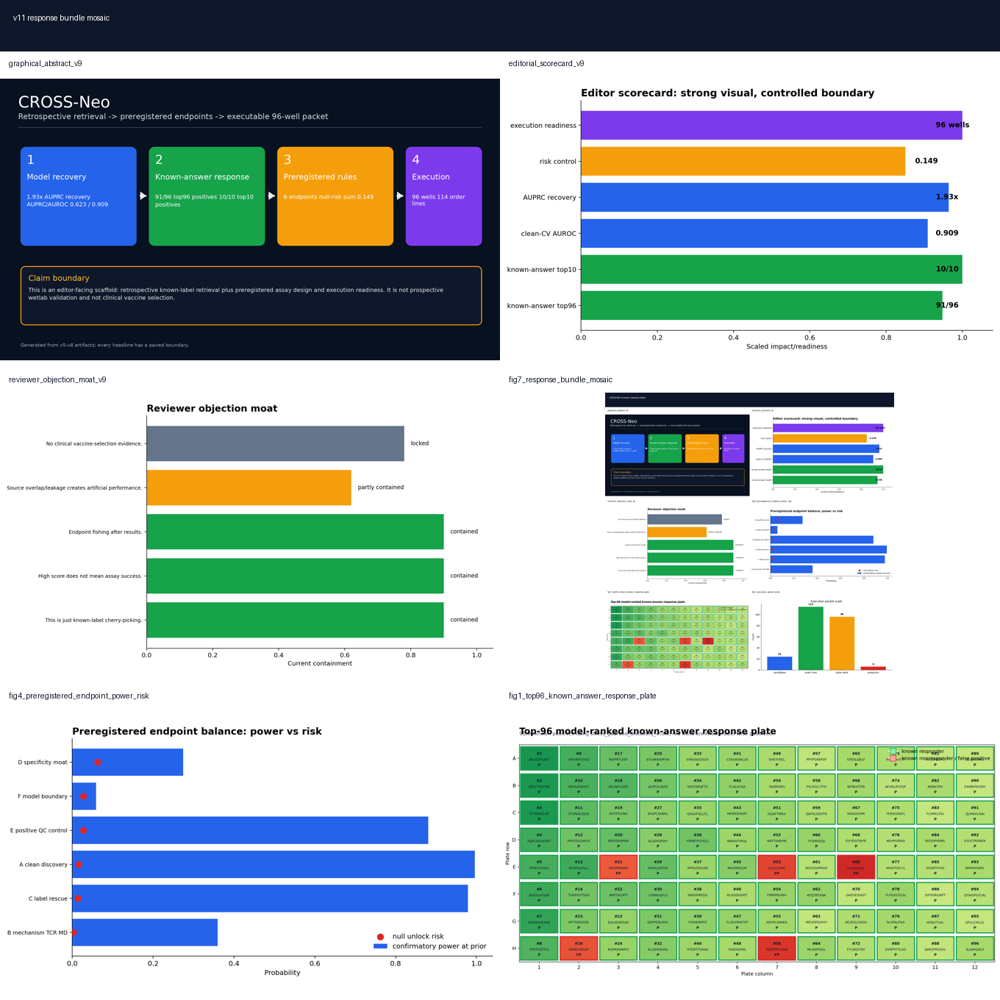

01Figures






02Task board
| task_id | task_code | track | group | task | dependency | priority_score | claim_boundary |
|---|---|---|---|---|---|---|---|
| T11-0AD48FA4 | t11-06 | analysis | project mgmt | split the 20-task backlog into mini-tasks by owner and dependency | v7-v10 artifacts | 0.950 | analysis / reviewer-safe |
| T11-03357044 | t11-17 | reviewer | claim safety | show which claims are allowed now versus locked for later | v10 reviewer packet | 0.940 | reviewer defense / claim-safe |
| T11-178AF38A | t11-03 | analysis | reviewer defense | write a rebuttal matrix for the five most likely reviewer objections | v7-v10 artifacts | 0.930 | analysis / reviewer-safe |
| T11-D4E196E5 | t11-27 | next | QA | add a reproducibility checklist for every table in the packet | v7-v10 artifacts | 0.930 | task backlog only |
| T11-A913B5AA | t11-01 | analysis | external validation | write an external-validation task list for K2/Bundang-style follow-up | v7-v10 artifacts | 0.920 | analysis / reviewer-safe |
| T11-F7A117BC | t11-15 | reviewer | reviewer defense | add an objection-response table with exact evidence file anchors | v10 reviewer packet | 0.920 | reviewer defense / claim-safe |
| T11-DDA3836D | t11-30 | next | QA | create a reviewer-facing summary of what is deliberately not claimed | v7-v10 artifacts | 0.920 | task backlog only |
| T11-82C00CEF | t11-02 | analysis | figures | write a figure-caption expansion pack for the strongest visuals | v7-v10 artifacts | 0.910 | analysis / reviewer-safe |
| T11-463705D6 | t11-18 | reviewer | reviewer defense | separate positive controls from discovery lanes in a visible matrix | v10 reviewer packet | 0.910 | reviewer defense / claim-safe |
| T11-94291DFC | t11-31 | next | reviewer defense | create a single-slide narrative of why 91/96 matters and what it does not prove | v7-v10 artifacts | 0.910 | task backlog only |
| T11-FF393155 | t11-05 | analysis | claim safety | add a claim-boundary ledger mapping every allowed claim to a forbidden upgrade | v7-v10 artifacts | 0.900 | analysis / reviewer-safe |
| T11-B4D861B9 | t11-11 | execution | lab handoff | prepare a per-candidate checklist that maps assay conditions to readouts | v6 execution packet | 0.900 | execution scaffold / reviewer-safe |
| T11-4E375345 | t11-16 | reviewer | reviewer defense | build a red-flag registry for leakage, fishing, and claim inflation | v10 reviewer packet | 0.900 | reviewer defense / claim-safe |
| T11-C6DA9A7B | t11-25 | next | next step | prepare a decision-tree for what changes if the next assay is negative | v7-v10 artifacts | 0.900 | task backlog only |
| T11-DA97013B | t11-09 | execution | lab handoff | create a public-safe result-entry template for future assay readout | v6 execution packet | 0.890 | execution scaffold / reviewer-safe |
| T11-CE320A6C | t11-19 | reviewer | failure registry | map the top 5 false-positive wells to action items | v10 reviewer packet | 0.890 | reviewer defense / claim-safe |
| T11-9748CB6E | t11-26 | next | next step | prepare a decision-tree for what changes if the next assay is positive | v7-v10 artifacts | 0.890 | task backlog only |
| T11-BD48DAB7 | t11-04 | analysis | failure registry | build a candidate triage table from the top96 false-positive wells | v7-v10 artifacts | 0.880 | analysis / reviewer-safe |
| T11-4137B67E | t11-10 | execution | lab handoff | create a control-sequence list for positive, negative, and provenance checks | v6 execution packet | 0.880 | execution scaffold / reviewer-safe |
| T11-EC2E4DE7 | t11-32 | next | QA | build a ‘do not overcall’ checklist for every future update | v7-v10 artifacts | 0.880 | task backlog only |
| T11-C0AFCA0C | t11-08 | analysis | preregistration | expand the endpoint plan into a slide with power and risk thresholds | v7-v10 artifacts | 0.870 | analysis / reviewer-safe |
| T11-9C983253 | t11-21 | reviewer | visual bundle | make a dense mosaic for a single-screenshot review | v7-v10 artifacts | 0.870 | reviewer defense / claim-safe |
| T11-732604FF | t11-12 | execution | lab handoff | generate a per-well task map that can be printed for the bench | v6 execution packet | 0.860 | execution scaffold / reviewer-safe |
| T11-86715E7A | t11-23 | next | next step | prepare a mini-experiment backlog for top three high-priority candidates | v7-v10 artifacts | 0.860 | task backlog only |
| T11-3B0A4DDB | t11-20 | reviewer | summary | draft a one-slide summary that compares v3, v5, v7, v8, v10 | v7-v10 artifacts | 0.850 | reviewer defense / claim-safe |
| T11-249540E2 | t11-07 | analysis | known-answer | expand the known-answer board into a score-by-source breakdown | v7-v10 artifacts | 0.840 | analysis / reviewer-safe |
| T11-4F8A5CD3 | t11-14 | execution | packaging | produce a standalone figure index that points to every key image | v7-v10 artifacts | 0.840 | execution scaffold / reviewer-safe |
| T11-FB54C844 | t11-24 | next | next step | prepare a rescue backlog for the false-negative / rescue wells | v7-v10 artifacts | 0.840 | task backlog only |
| T11-C9D7EE22 | t11-22 | reviewer | visual bundle | add a version timeline from score recovery to reviewer response | v7-v10 artifacts | 0.830 | reviewer defense / claim-safe |
| T11-4A48FFBC | t11-13 | execution | packaging | bundle the execution packet and reviewer packet into one delivery zip | v7-v10 artifacts | 0.820 | execution scaffold / reviewer-safe |
| T11-5BC1ED8E | t11-29 | next | QA | crosswalk the task board to existing v6/v7/v8/v9 assets | v7-v10 artifacts | 0.810 | task backlog only |
| T11-D57FC140 | t11-28 | next | QA | add a glossary of claim-boundary language used across packets | v7-v10 artifacts | 0.800 | task backlog only |
03Control matrix
| control_id | purpose | anchor_task | boundary_state | linked_tasks |
|---|---|---|---|---|
| external_validation_block | separate prospective external validation from retrospective demo | t11-01 | locked | 1.000 |
| figure_caption_pack | attach explicit boundary language to every high-impact figure | t11-02 | active | 1.000 |
| reviewer_rebuttal_map | pre-answer objections with file anchors | t11-03 | active | 1.000 |
| failure_to_action | use false positives as a queue, not a discarded appendix | t11-04 | active | 1.000 |
| claim_boundary_ledger | keep allowed claims and forbidden upgrades side by side | t11-05 | locked | 1.000 |
| mini_task_split | split the backlog into granular owner/dependency items | t11-06 | active | 1.000 |
| score_by_source | show how the score behaves by source slice | t11-07 | active | 1.000 |
| power_risk_slide | freeze the endpoint risk slide | t11-08 | locked | 1.000 |
| result_entry_template | standardize the future assay readout entry | t11-09 | active | 1.000 |
| control_sequence_list | track positive / negative / provenance controls | t11-10 | active | 1.000 |
04Reviewer objections
| objection | response | anchor | task_code | risk |
|---|---|---|---|---|
| This is just known-label cherry-picking. | Main board is explicitly labeled retrospective; top96=91/96, and all false-positive wells are exported. | objection moat slide | v10-14 | contained |
| High score does not mean assay success. | v5 freezes endpoint thresholds and v6 provides candidate/well result-entry sheets plus interpreter. | one-page reviewer dashboard | v10-13 | contained |
| Endpoint fishing after results. | Confirmatory thresholds are predeclared; null-risk sum=0.149. | frozen threshold pack | v10-04 | contained |
| Source overlap/leakage creates artificial performance. | Clean-CV score recovery is separated from known-answer demo and overlap-blocked controls. | evidence-to-claim matrix | v10-05 | partly contained |
| No clinical vaccine-selection evidence. | The clinical claim is explicitly locked in the evidence matrix. | claim boundary table | v10-08 | locked |
| Need more tasks and finer granularity. | v11 splits the backlog into 32 tasks with dependencies and boundary tags. | reviewer task board | t11-06 | contained |
| This is still too optimistic. | v11 includes a do-not-overcall checklist and a what-is-not-claimed summary. | QA packet | t11-30 | contained |
05Sources + paths
Output directory: /home/seungho/personal/THCA_data_analysis/project/results/cross_neo_kaggle_winner_playbook_2026_05_10/task_expansion_v11_2026_05_11
HTML: /home/seungho/personal/THCA_data_analysis/project/papers_hub_2026_05_04/cross_neo_task_expansion_v11.html
Live deploy status: ok